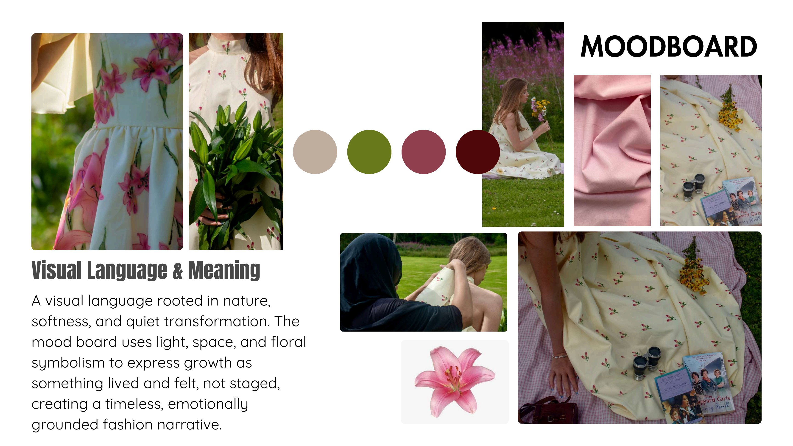
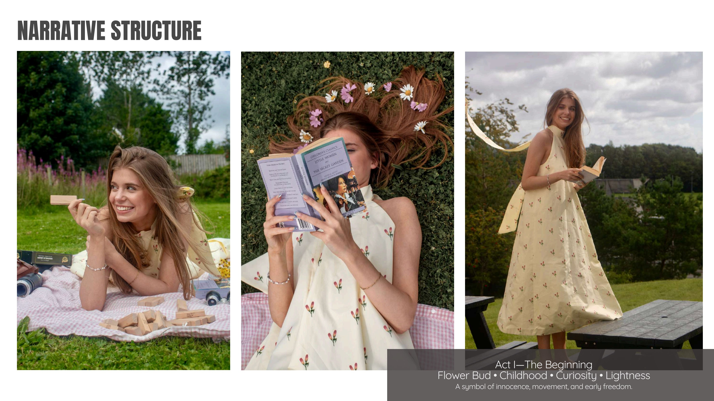
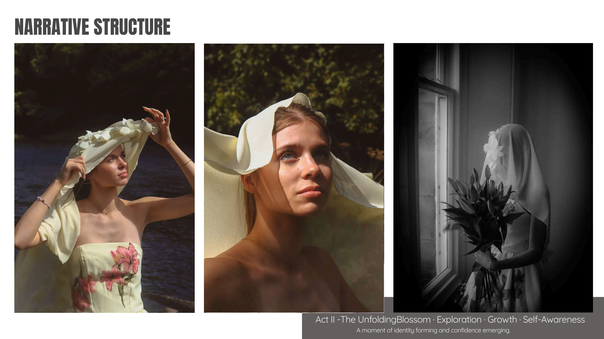
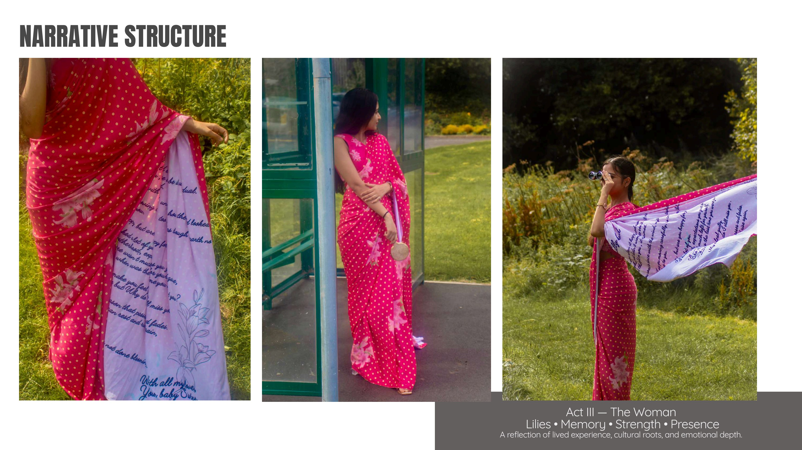
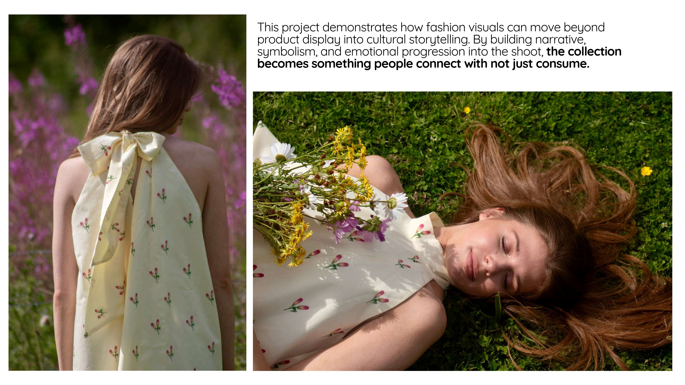

Creative Direction · Fashion Narrative
Threads of Becoming
A fashion narrative on identity, growth and womanhood — built as a visual story, not a traditional lookbook. Every look was treated as a chapter, not an outfit.
Transformation as narrative
The goal was to translate a fashion collection into a story of transformation — how a woman moves through different roles, identities and emotional states over time. I led the project as creative director and storyteller, shaping the concept, symbolism and visual flow from the ground up.
The visual language is rooted in nature, softness and quiet transformation: light, space and floral symbolism express growth as something lived and felt, not staged.
Three acts of becoming
- Act I — The Beginning. Flower bud · childhood · curiosity · lightness. A symbol of innocence, movement and early freedom.
- Act II — The Unfolding. Blossom · exploration · growth · self-awareness. A moment of identity forming and confidence emerging.
- Act III — The Woman. Lilies · memory · strength · presence. A reflection of lived experience, cultural roots and emotional depth.
What I owned
- Narrative design — built the three-act story structure to give the shoot emotional arc and meaning.
- Shoot flow & storytelling — directed the sequence of scenes for visual and emotional progression.
- Styling direction — ensured each look communicated its chapter in the narrative, not just a garment.
- Model guidance — coached models to embody a state of mind, not just a pose.
- Location & composition — used the Scottish Borders landscape as an active storytelling element.
Fashion visuals can move beyond product display into cultural storytelling. With narrative, symbolism and emotional progression built in, a collection becomes something people connect with — not just consume.
Exhibited at Heriot-Watt University, Scottish Borders Campus (2025), as part of the MSc Design Management graduate showcase.
Moodboard & the Three Acts




